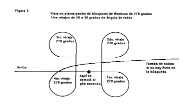
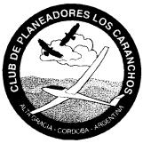
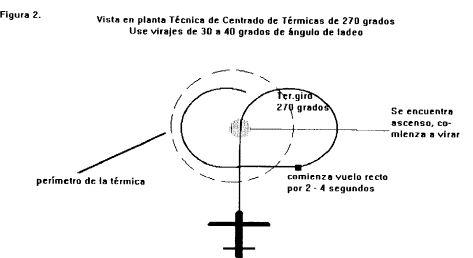

PROCEDIMIENTOS EN TÉRMICA
(Sailplane Thermaling
Procedures)
Por Richard H. Johnson (Extraído de la revista "Soaring" Feb'97)
Traducido por Fernando Videla (Club de Planeadores Punta Alta)
Publicado en “Volovelismo Argentino” N° 42 Oct-Nov’97
El
primer paso hacia un vuelo en térmica exitoso es el conocimiento necesario para encontrar
las térmicas. El segundo paso es la eficiente utilización de las térmicas durante el
subsecuente ascenso. Desde allí la belleza de volar a vela puede ser disfrutada en un
vuelo local, o en vuelo cross-country. Este artículo describe las recomendaciones del
autor para esas tan importantes fases.
1 -
Localizando las térmicas
a.
En remolque
Siempre es
deseable empezar la búsqueda de las (a veces elusivas) térmicas durante el ascenso en
remolque. Esto es particularmente importante cuando utilicemos remolque por avión o
planeador de autoenvuelo porque el remolque usualmente incluye los primeros 5 o 6
kilómetros del vuelo. Durante esa parte del vuelo la actividad convectiva debe ser
evaluada, y la localización de cualquier térmica utilizable encontrada debe ser tenida
en cuenta. También durante los relativamente cortos remolques por auto o por torno las
térmicas pueden ser encontradas con frecuencia, y es aconsejable retornar a esas áreas a
buscar ascensos después del corte. Recordar que es necesario sustraer de la indicación
del vario la tasa de caída intrínseca del planeador y la tasa de ascenso del remolque,
de esta manera arribamos al ascenso neto que el planeador puede esperar encontrar cuando
no esté siendo remolcado. Por esta razón (de tenerlo) es mejor setear el variómetro de
rango variable a su rango máximo durante el remolque.
Además
de evaluar la intensidad del ascenso térmico durante el envuelo, es necesario evaluar su
tamaño. Los modernos planeadores actuales son remolcados a 30 metros por segundo (aprox.
108 km/h), y vuelan al 80% de esa velocidad (85-90 km/h) mientras termiquean con 35 grados
de inclinación, el diámetro mínimo de térmica usable está alrededor de los 180
metros. Esto quiere decir que uno debe estar en la térmica por lo menos 5 o 6 segundos
durante el remolque si quiere asegurar una transición exitosa del remolque a la térmica.
Las térmicas frecuentemente no son grandes sobre los 300 metros de altura, por lo que no
es aconsejable cortar remolque hasta tener por lo menos 450 metros. Sin embargo, conocer
las localizaciones de las térmicas que fueron demasiado pequeñas para virar, encontradas
durante los primeros momentos del remolque es importante porque uno puede retornar a esos
lugares después del corte y ver si la térmica se expandió en diámetro a mayores
altitudes. Se debe poder estimar adonde el viento derivó la térmica para retornar a una
previamente encontrada, porque las térmicas siguen totalmente a los vientos horizontales.
b.
Efectos de las distintas cargas alares
Los planeadores de
baja carga alar como el Schweizer 1-26 o los Schleícher Ka6~Ka8 tienen la ventaja de
poder termíquear a baja velocidad, entonces pueden virar térmicas de menor diámetro que
los planeadores modernos. Para un ángulo de inclinación dado, el diámetro del circulo
del viraje de un planeador es proporcional al cuadrado de su velocidad de vuelo.
El
Schweizer 1-26 puede virar con seguridad a 63 km/h con un ángulo de inclinación de 35
grados, entonces su diámetro de giro será solamente de 90 metros. Por esta razón éste
y otros planeadores de baja carga alar tienen la capacidad de termiquear exitosamente a
menores alturas de las que necesitan los planeadores de alta carga alar.
c.
Después del
corte
Lo ideal
seria cortar el remolque en una térmica amplia y potente, pero esto no ocurre tan
frecuentemente como quisiéramos. Dígale al piloto remolcador dónde Ud. piensa que se
halla el mejor ascenso (O pregúntele a él), y pida ser remolcado hasta allí, si esto es
acordable. Si no se encuentra ascenso alguno en el área de corte, entonces retorne a las
áreas donde halló ascensos mientras era remolcado, o donde puedan darse probables
ascensos. Las mejores elecciones suelen ser áreas donde termiquean pájaros o veleros, o
donde hay pequeños cúmulus en crecimiento. Recuerde que la primera térmica no tiene por
qué ser algo excepcionalmente bueno, pero sí es necesario que sea capaz de subirlo por
lo menos hasta 750 metros, donde cómodamente podrá buscar las térmicas más fuertes.
Cuando
no hay cúmulos presentes, o cuando está en vuelo local, usualmente es mejor ir a los
lugares que sabemos que habitualmente desprenden térmicas (esto es moneda corriente en
los clubes de planeadores). Estos suelen estar cerca de los terrenos más altos y mas
secos a los que el sol calentó más. Manténgase alejado de los terrenos húmedos y
bajos, y de las áreas de lagos y ríos.
Cuando
los cúmulos se hacen presentes, pídale al piloto remolcador ser llevado directamente a
uno de los más cercanos que se halle en crecimiento. Evite en lo posible ir a cúmulus
maduros y grandes, especialmente en su primera térmica, porque es muy probable que las
corrientes ascendentes hayan desaparecido a bajas altitudes para el momento en que Ud.
llegue. Eligiendo un pequeño pero creciente cúmulos es más probable que la térmica
esté aún activa a su llegada. El piloto puede fallar en encontrar ascenso al arribar al
primer cúmulus, pero frecuentemente hay otros pequeños en formación en las vecindades
que pueden ser investigados con una buena probabilidad de éxito. Recuerde que las
ascendentes térmicas derivan a favor del viento y a la velocidad del mismo, entonces
busque las áreas desde las nubes hacia barlovento. Cuán lejos a barlovento esté el
ascenso depende de su altitud de vuelo, la velocidad del viento, y la potencia de la
térmica. Esto quiere decir que usualmente el mejor ascenso se halla del lado de donde
viene el viento, pero no siempre. Cuando el viento decrece en velocidad o cambia de
dirección cerca de la base de la nube, el mejor ascenso frecuentemente se halla en otros
lados de la misma.
d. Bajo cúmulus y calles de cúmulus
Cuando
se vuela bajo cúmulos y bajo calles de cúmulus, busque aros de vapor que cuelguen debajo
del nivel de las bases de las nubes, porque ésas son usualmente las áreas donde las
ascendentes son más fuertes. Contrariamente a la creencia popular, el aire en la térmica
típica es más caliente que el aire circundante sólo cuando está cerca de la superficie
del suelo. Para el momento que alcanza la altitud de 450-500 metros, suficiente aire
adicional se ha mezclado con aquél que era más caliente que el aíre circundante, y lo
enfrió basta la misma temperatura que aquél, e incluso puede que menos. (Referencia A)
e.
Temperatura
Virtual
Por
qué entonces una térmica continúa subiendo? De acuerdo a la referencia 8, hay dos
razones básicas. Una es que es momento vertical de la térmica resiste la propia
tendencia a desacelerarse, y la otra es que la térmica usualmente contiene más humedad
que el aire circundante. El sol calienta las caras de la superficie terrestre y causa una
humedad extra en las superficies, que es liberada como vapor dentro de la térmica cuando
ésta se forma. La adición de vapor a la térmica no sólo mejora su ascenso, sino que
también incrementa su punto de rocío. Esto frecuentemente puede conducir a la formación
de anillos de vapor ligeramente antes de que la térmica encuentre la base de las nubes.
Cuando éstas se forman, los anillos aparecen colgando hacia abajo de las bases de las
nubes cumuliformes, y esto usualmente es un signo de ascenso potente. Las moléculas de
vapor de agua son menos densas que las de aire seco porque están formadas por moléculas
de hidrógeno-oxígeno de baja densidad. Estas desalojan algunas de las moléculas de alta
densidad de oxígeno y nitrógeno propias del aire seco, añadiendo de este modo potencia
a la térmica. El nombre científico usado para describir este efecto de vapor de agua
sobre la térmica es TEMPERATURA VIRTUAL. Esta es la temperatura a la cual una muestra de
aire seco debe ser sometida para lograr la misma capacidad ascensional que la muestra de
aire húmedo. Esto puede significar tanto como 4 o 5 grados Fahrenheit, si la humedad es
relativamente alta.
f. Buscando
térmicas cuando se está bajo:
Intentamos
que no ocurra, pero a veces nos encontramos demasiado bajos para nuestro gusto en un vuelo
cross-country, o estamos demasiado lejos de nuestro aeródromo en vuelo local para volver
de forma segura. A menos que se encuentre una térmica en los próximos minutos, se
deberá llevar a cabo un aterrizaje fuera del campo. Las opciones para encontrar ascensos
son ahora limitadas y hay poco tiempo para implementar una búsqueda de los mismos. Muchas
veces estamos volando solos sin la ayuda de otros planeadores para encontrar ascendentes,
entonces depende de nosotros el mantener la máquina volando. Que hacer entonces? Antes
que nada hay que buscar un campo aterrizable al alcance de nuestra capacidad de planeo,
siempre. Segundo, buscar pájaros que estén volando en térmica cerca nuestro, y también
buscar cualquier humo, polvo o vapor que se vea subir o formar remolinos. Cualquier
indicación de convergencia de vientos de superficie nos dará una idea de dónde una
térmica puede estar formándose porque estos alimentan de aire caliente cualquier
corriente ascendente. Los tractores arando terreno seco en campos adyacentes son
frecuentemente excelentes fuentes de térmicas, y cualquier convergencia de sus colas de
polvo (dust devils) provee un fiable indicador de térmicas. Si no se tiene idea de dónde
puede haber ascenso, entonces investigue suavemente viento a favor sobre terrenos secos y
soleados. Si se encuentra un área de cero descenso, intente unos pocos círculos en ella
porque puede ser una nueva térmica emergente que pronto puede incrementar su potencia.
Intentar encontrar térmicas bajos cúmulos cuando se esta bajo es usualmente inútil
porque la pompa térmica que formó la nube probablemente no exista a bajas altitudes para
entonces. Si se encuentra un remolino de polvo, vírelo en la dirección opuesta a la que
gira porque esto va a minimizar el radio de giro de su velero. Si está muy bajo como para
virar con seguridad en un remolino de polvo, trate de ganar altura volando en línea recta
a través de él repetidamente.
g. Patrón de búsqueda de térmicas
 |
 |
||
Cuando se está
incómodamente bajo y se necesita imperiosamente un ascenso para continuar el vuelo,
algunas veces ayuda ejecutar alguna clase de patrón de búsqueda, pero sólo en un área
donde alguna actividad térmica es evidente. Si se encuentra en un área que parece
producir térmicas, y algún ascenso es indicado por el variómetro, entonces es
beneficioso investigar el área adyacente, en vez de continuar volando en línea recta. EI
giro de 270 grados para buscar térmicas es un buen patrón, y se puede ver un gráfico
explicativo en la figura 1. Entonces, después que el piloto encuentra alguna indicación
de actividad térmica, inicia un suave viraje de 20 a 30 grados de inclinación a una
velocidad cercana a la del mejor LD de su máquina, ya sea a la izquierda o a la derecha.
Si después de ejecutar un circulo (270 grados) no se encuentra la térmica, entonces el
piloto debe nivelar las alas y volar en línea recta por 6 u 8 segundos antes de iniciar
un segundo viraje do 270 grados. en la misma dirección que el anterior. Si no encuentra
todavía el ascenso, se puede ejecutar un tercer y un cuarto patrón de búsqueda, si es
necesario. A menudo este patrón de búsqueda en forma de hoja do trébol logra localizar
una térmica elusiva, o por lo menos un área de cero descenso, si alguna existe en las
vecindades. Si no la hay, entonces no queda otra alternativa que continuar hacia un área
mas esperanzadora.
2. Decidiendo en qué sentido
virar
a. Librado del remolque
Cuando
el remolque es por avión y se corta dentro de
una térmica, debemos por convención de seguridad virar a la izquierda. Por lo tanto, a
menos que la térmica ya esté ocupada por otros planeadores virando en la dirección
opuesta, o que estemos a más de 5 kilómetros del radio de un aeródromo o sitio de
competencia, usualmente es mejor virar a la izquierda en vez de perder tiempo y altura
cambiando de dirección.
b. Cuando se está solo
Cuando
se está solo y buscando ascendentes, trate de sostener con mano muy suave el bastón y
detectar si algún ala tiende a subir más que la otra. Si esto ocurre, es probable que la
parte más potente del ascenso esté en esa dirección, y el giro hacia ese lado
probablemente sea la mejor manera de virar. Si las alas tienden a permanecer niveladas al
abordar el ascenso, entonces Ud. puede girar en su dirección favorita y esperar encontrar
el núcleo rápidamente.
3. Convivencia en la térmica y
seguridad
a.
Dificultad en ver el tráfico aéreo
Cuando no les da
el sol los planeadores son difíciles de ver, especialmente sí están ligeramente por
debajo del horizonte para el observador. Vistos de atrás o de delante las siluetas son
particularmente difíciles de ver porque los planeadores modernos presentan perfiles muy
pequeños a la vista. Pintar la nariz, las puntas de ala y la cola de un color brillante
de alto contraste añade seguridad al vuelo. Las estadísticas de accidentes en los
E.E.U.U. indican que alrededor del 85% de las colisiones en vuelo ocurren cuando una nave
alcanza a otra (referencias C & D). Esto indica que sólo los ocupantes de un avión
tuvieron la oportunidad de ver al otro antes de la colisión, y esto incrementa la
probabilidad de accidente enormemente. Queda así establecida, especialmente para un
planeador la importancia de ser bien visible a la aeronave que nos alcanza. Lo mejor que
podemos hacer, a falta de luces estroboscópicas, es pintar con pintura brillante nuestro
planeador mientras sea posible, y esto va a hacer decrecer la probabilidad de una
colisión en vuelo. A causa de los efectos de las altas temperaturas sobre la resistencia
estructural, muchos planeadores construidos con materiales compuestos sólo pueden ser
pintados con pinturas brillantes en su nariz, cola y puntas de ala, pero aún así esto
ayuda considerablemente. La peor hipótesis de escenario de colisión es una aeronave toda
blanca volando debajo de nubes oscuras, o sobre terreno cubierto de nieve.
Cuando
se vuela en espacio aéreo congestionado, el piloto de planeador puede mejorar sus
visibilidad ejecutando virajes, o agitando sus alas periódicamente. De todos modos,
cuando cruce una aerovía muy transitada hágalo a 90 grados para poder ver cualquier
tráfico sobre la misma, y permanezca por lo menos 150 metros debajo de cualquier nube.
b. Aproximándose a una térmica ocupada
Cuando
se aproxime a un grupo de planeadores en térmica o igualmente a un área aparentemente despejada, observe hacia afuera con
mucha atención porque otros tráficos pueden ser muy difíciles de ver, especialmente
aquellos que están volando debajo de su horizonte. Para entrar en una térmica ocupada,
trate de hacerlo de manera tal que su punto de entrada sea opuesto al de otros planeadores
que estén a +/- 60 metros de su altitud. Esto usualmente es efectuado incrementando la
velocidad si se arriba muy tarde, o disminuyendo la velocidad si se arriba muy temprano al
punto opuesto al tránsito deseado. Si arriba a alta velocidad, tenga a bien clarear
apropiadamente el espacio arriba suyo, porque al disminuir su velocidad para virar
incrementará su altura.
Cuando
esté establecido en una térmica donde hay otras máquinas, trate de evitar ponerse en el
ángulo ciego del planeador que lo precede, el cual es desde las 4:30 a las 7:30
(posiciones relativas de reloj). Esto a veces no es posible en una "pajarera",
pero el peligro adicional de esto debe ser reconocido, y evitado mientras sea posible.
Cuando no sea posible evitar seguir a un planeador en su ángulo ciego, avisarle a su
piloto por radio que Ud. está observándolo constantemente y que va a mantener un
adecuado espacio de seguridad es un buen gesto y es siempre muy apreciado. Al abandonar
una pajarera , se debe tener especial cuidado de no picar muy pronto o muy abruptamente,
esto puede ser peligroso a los veleros que vuelan debajo suyo, y en su ángulo ciego!
4. Técnicas de vuelo en
térmica
a. Consideraciones especiales
Cuando
ha contactado algún ascenso, el paso siguiente es encontrar dónde éste es más fuerte,
y entonces centrar el planeador como mejor se pueda en el núcleo de la térmica. La
mayoría de las térmicas son esencialmente circulares (en su corte transversal), aunque
algunas veces formas de riñón u otras formas extrañas son encontradas. Lo mejor es
asumir que la térmica que Ud. está queriendo centrar es circular y que su potencia se
incrementa al acercarse a su centro. También asuma que su diámetro está limitado a
aprox. 180 metros sobre la altura de corte, algo menos cuando se está bajo (300 metros de
altura) y algo más cuando se gana altura. Esto significa que uno no debe unicamente volar
en linea recta cuando encuentra ascenso porque después de aprox. 7 segundos probablemente
se haya salido de la térmica por su lado opuesto, y esto siempre que se haya tenido la
suerte de haberla atravesado por su centro. Entonces va a ser necesario para el planeador
virar en círculos para permanecer en ella.
Si la
térmica ya está ocupada por otro planeador virando, es necesario por criterio de
seguridad circular en la misma dirección. Si está ocupada por un ave planeando en ella,
vire en la misma dirección porque ella casi siempre sabe dónde está el mejor ascenso.
Si no tiene otro indicador, intente detectar si un ala se levanta más que la otra, esto
usualmente indica de qué lado de la trayectoria del planeador está el mejor ascenso.
Cualquiera sea el sentido del giro, uno necesita empezar a virar a los 3 o 4 segundos de
haber encontrado la térmica.
b.
Método de 270 grados para el centrado
de térmicas
Hay
varios métodos para centrar térmicas, pero pienso que el de 270 grados es uno de los
mejores y de los más simples. Después de encontrar el ascenso, el piloto inicia un
viraje de 30 a 40 grados de inclinación manteniendo constante la velocidad, y trata de
distinguir aproximadamente en qué cuadrante se encuentra el ascenso mas fuerte durante el giro inicial de
270 grados (ver figura 2). Cuando determina el aproximado lugar donde el ascenso más
fuerte está, hay que tener en cuenta que algunos variómetros tienen un retardo de 1 a 2 segundos en la respuesta. Si está claro dónde
está el mejor ascenso, deje de virar por unos 2 a 4 segundos cuando esté pasado unos 270
grados del lugar donde halló el ascenso, eso va a permitir al planeador avanzar en línea
recta alrededor de 30 a 60 metros en la dirección de la parte más fuerte de la térmica.
Comience entonces a virar nuevamente con 30 a 40 grados de inclinación en el mismo
sentido que antes, y repita el procedimiento de 270 grados para lograr el óptimo
centrado. Acortando paulatinamente los períodos de vuelo recto, o reduciendo el ángulo
de inclinación, se puede centrar rápidamente la parte más potente de la térmica.
Usualmente, después del primer intento de centrado, sólo es necesario incrementar o
disminuir el ángulo de ladeo para mover el centro del viraje hacia el núcleo de la
térmica. Una técnica similar es cerrar el viraje luego de pasar el mejor ascenso, y
abrirlo al retomarlo para posicionar al planeador cerca
del núcleo. Con cualquiera de
estas dos técnicas no intente observar las indicaciones de su brújula, guíese por el
terreno o por las nubes para tener referencias direccionales.
 |
c. Angulos de ladeo óptimos
Cuando
se busca una térmica lo mejor es volar en línea recta, o ejecutar virajes suaves, de
menos de 30 grados de ladeo, para extender el área de búsqueda y al mismo tiempo
minimizar el descenso del planeador. Después de que la térmica ha sido localizada y
centrada, entonces el óptimo ángulo de inclinación es aquél que maximiza la velocidad
ascensional de la máquina, usualmente el ángulo óptimo para virar térmicas va a estar
entre 30 y 40 grados, pero eso depende de la carga alar y del diámetro de la térmica.
Obviamente es necesario mantenerse virando dentro del perímetro de la térmica; como
quiera que sea, éstas son casi siempre más potentes en su centro, y no es obvio qué
ángulo de inclinación provee el mejor ascenso porque el descenso propio del velero se
incrementa rápidamente cuando vira a elevados ángulos de inclinación. Se han escrito
ensayos técnicos al respecto, pero en el mundo real donde cada térmica es diferente, la
evaluación del ángulo de ladeo debe basarse en juicios estimativos. Si se vuela solo,
las indicaciones del variómetro tratarán de ser maximizadas probando con distintos
ángulos de ladeo, y si se vuela con otros veleros, resulta entonces obvio cuál encuentra
el mejor promedio de ascenso, y su ángulo de ladeo y el diámetro de sus virajes
proveerán a los demás de una guía confiable. Recuerde que una carga alar más alta
requerirá un mayor ángulo de ladeo para optimizar la performance en ascensos con
respecto a un idéntico planeador con una carga alar más baja, porque la baja carga alar
permite termiquear a bajas velocidades y por ende se logra un menor radio de giro a un
ángulo de ladeo dado.
d. Usando var¡ómetros acústicos
Por
razones de seguridad, todos los planeadores deben ser equipados con variómetros
acústicos, esto permite al piloto concentrar su atención hacia afuera, sin tener que
prestar atención al instrumental mientras se termiquea. Como mínimo debe hacer un sonido
más agudo o estridente a medida que crece la velocidad de ascenso, y debería también
informar las descendentes emitiendo un sonido más grave o de menor frecuencia a medida
que estas son mayores. También por razones de seguridad, cada planeador debería ser
equipado con una lanita en el centro de la cabina. Con esto ya no es necesario para el
piloto mirar sus instrumentos mientras termiquea, excepto por alguna ocasional mirada a la
lanita, sus ojos deben estar enfocados fuera de la cabina. Generalmente, la velocidad
puede ser mejor controlada por la actitud de vuelo, el ruido del aire, y el feeling en los
controles que mirando un indicador de velocidad. Una de las más efectivas técnicas para
aprender a mantener los ojos fuera del cockpit consiste en tapar con papel o tela el panel
de instrumentos y practicar. Sólo efectúe esta práctica de vuelo sin instrumentos
volando a una altura segura, salvo que se vuele con un instructor a bordo, caso en el cual
se puede practicar a cualquier altura, teniendo siempre la precaución de destapar el
tablero antes de iniciar el circuito de tránsito (aquí es muy importante el control
exacto de la velocidad). Uno debe ser capaz de juzgar aproximadamente la altura que posee
tomando como referencia los tamaños de los objetos que conoce, y sus movimientos
relativos al planeador.
Antes y
durante la ejecución de virajes, siempre chequee el horizonte, especialmente en la
dirección del giro para estar seguro de que no hay peligro de colisión ni amenaza para
su seguridad. Esto es mejor que mirar el suelo debajo suyo porque a menos que alguien en
tierra le esté disparando su más severa amenaza son las otras aeronaves volando cerca
suyo.
e. Antes del aterrizaje
Cuando esté
finalizando su vuelo, y antes de iniciar el circuito de tránsito, recuerde apagar su
variómetro acústico. Sus sonidos ya no son necesarios v de esta manera se elimina una
distracción significativa en el momento que Ud. necesita de toda su concentración. Que
tenga un feliz y seguro Vuelo a Vela!
Referencias
a).
T.A.M. Bradbury "Lift And Rapse Rates", Sailplane & Gliding, Aug-Sept 1993
b). T.A.M.
Bradbury, “WaterVapor- The Invisible Factor", Sailplane & GIiding, Oct-Nov
1995
c). FAA Pamphlet
P-8740-51 / AFS-800-0687, "How To Avoid A Midair Collision"
d). R.H.Johnson,
"How To Avoid A Mídair Collision - A New Approach", Soaring, Apríl 1989.